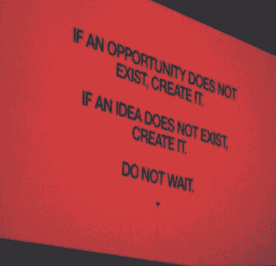
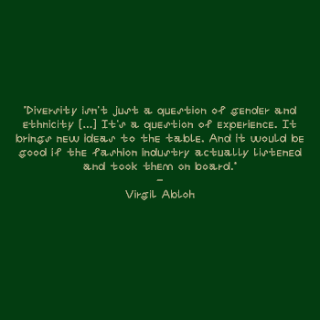
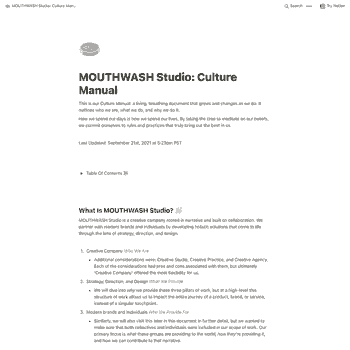

Founding Principals
· Grace Wales Bonner
November 21, 2023
Founding Principals
Study your influences. Now study what influences your influences. Now study what influences the influences of your influences
November 21, 2023 · https://twitter.com/Machine_Drum/status/1455756629798899712
Founding Principals
I want to transfer to the public the desire to ask more questions, to become more curious.
November 21, 2023
Founding Principals
“Research is a ceremony for building closer relationship with an idea”
-Shawn Wilson, ‘Research is Ceremony: Researching within an Indigenous Paradigm’.
November 20, 2023
Founding Principals

November 20, 2023
Founding Principals
“Creativity is less about novel ideas and more about combining disparate ideas into new combinations”
November 20, 2023
Founding Principals
November 20, 2023
Founding Principals
· Accumulating vs integrating
## I don't want to know more, I want to _integrate_ more.
It's not about accumulation, it's about connection.
November 20, 2023
Founding Principals
“You don’t commit to a venue or a medium or a technique. You commit to a path and an impact. Broadway is a venue. Joy through movement is an art. When the venue doesn’t support your art, you can change it without changing your commitment to the journey.”
— Seth Godin
November 20, 2023
Founding Principals
Innovators are usually synthesizers — they synthesize everything they know and add their own personal talents, and out comes something new. — John Kander
November 20, 2023
Founding Principals
· corita-kent-brainstorming
- Record ideas as they emerge
- Suspend all critical judgement until the end of the session. Idea production is ten times greater when imagination isn't restricted by judicial attitudes.
- Quantity is important. The more ideas, the greater the likelihood of success.
- Set a goal for how many ideas you want to come up with. Make the number so large that you will have to stretch to achieve your goal.
- Use and build on the ideas of others.
November 19, 2023
Founding Principals
Creativity is inherently anti-authoritarian. As in: to be successfully creative, you have to shed the part of yourself that desperately wants reassurance. It’s only then that you can escape cliche and escape paradigmatic thinking.
November 18, 2023 · https://ava.substack.com/
Founding Principals
when you think about your goals, don’t just consider the outcome you want. Focus on the repetitions that lead to that place. Focus on the piles of work that come before the success. Focus on the hundreds of ceramic pots that come before the masterpiece.
November 18, 2023
Founding Principals
· Monica Narula
The word “practice” is such a wonderful word because it has time built into it: you can only practice if you practice
November 18, 2023
Founding Principals
· Eliel Saarinen
Always design a thing by considering it in its next larger context: a chair in a room, a room in a house, a house in an environment, an environment in a city plan.
November 18, 2023
Founding Principals
“It is not the amount of knowledge that makes a brain. It is not even the distribution of knowledge. It is the interconnectedness."
— Howard Bloom
November 17, 2023
Founding Principals
The Japanese concept of Ma has been described as a pause in time, an interval or emptiness in space. Ma is the time and space life needs to breath, to feel and connect. If we have no time, if our space is restricted, we cannot grow. This universal principle applies to every aspect of life.
November 16, 2023
Founding Principals
· Playgrounds over Paths
**Playgrounds over Paths**
Today's standard design wisdom focuses on the design of linear paths. Sometimes they may branch, but they're ultimately a sequential set of steps towards a desired outcome.
Within complex systems, these paths often lack the flexibility to adapt to emergent conditions - users acting outside the "designed boundaries".
Instead of designing explicit paths, APD is oriented towards the design of playgrounds - limited spaces where the boundaries are defined by the mechanics of the system. Within these playgrounds, desire paths will naturally form based on different factors: cost, convenience, bounded rationality, etc.
Instead of designing the "center" and scripting how activities within it must unfold, it designs the periphery instead, leaving the center alone. It hopes to create a free space, that can accommodate the emergent behaviors of its users.
November 16, 2023
Founding Principals
· Hannah Arendt, Men in Dark Times
"…storytelling reveals meaning without committing the error of defining it…”
November 16, 2023
Founding Principals
Close the gap between idea and action.
November 16, 2023 · http://ltwp.net/manifesto
Founding Principals
· Listening and Writing to Images, Tina M. Campt and Jace Clayton in conversation
"I’m challenging us to think of synesthesia as something that actually happens and to embrace a synesthetic relationship to sound and images, even though that may not be the cognitive modality that we usually inhabit. But if we do this intentionally, if we literally try to hear something that is not necessarily visualized in the image, then listening to images becomes a way of enacting the broader experience of how images register. How do we get access to those deeper resonances? For me, again, it started with the idea of thinking a concept in relationship to an object that is very different from it."
November 16, 2023 · https://www.e-flux.com/journal/136/538578/listening-and-writing-to-images/
Founding Principals
· img_2890.jpeg
November 16, 2023
Founding Principals
I always try to make work that activates the viewer to be a co-producer of our shared reality.
Olafur Eliasson
November 15, 2023
Founding Principals
An artist sees life, takes it in, changes it, and brings it back out. And what has been brought out has changed the world around it. The quality and degree of that change is the profundity of art. All art causes change. Art is duty.
And and artist must pay attention to the world.
November 14, 2023
Founding Principals
· deep, slow, intentional work
There is such urgency in the multitude of crises we face, it can make it hard to remember that in fact it is urgency thinking (urgent constant unsustainable growth) that got us to this point, and that our potential success lies in doing deep, slow, intentional work.
November 14, 2023
Founding Principals
· Joanne K Cheung
to overcome imposter syndrome, have confidence in your depth of curiosity rather than your expertise.
November 14, 2023
Founding Principals
· Harry Dry ⋱ Thomas Oppong
If you want to increase the quality of your work – your output – you must increase the level of your inputs. Your input is knowledge.
November 14, 2023
Founding Principals
· Matisse
We ought to view ourselves with the same curiosity and openness with which we study a tree, the sky or a thought, because we too are linked to the entire universe.
∆ Henri Matisse
November 13, 2023
Founding Principals
It's easier to recognize beauty than it is to create it. You're good enough to know that what you're doing isn't good, but not good enough to produce something great. When you find yourself in this frustrating limbo, the challenge is to never forget what got you there in the first place. Remember that thing that got you into the game.
Your love. Your passion. Your taste. That's the reason you're here. You still belong, even if you don't feel like it right now. Your taste can be killer even if your ability is questionable.
Commit to the process and you'll become good enough, soon enough. Put in a volume of work. Close the gap.
November 13, 2023 · https://jamesclear.com/ira-glass-failure
Founding Principals
I think an office is about production, whereas a studio is about practice
November 13, 2023 · https://www.kaleidoscope.media/article/hans-ulrich-obrist
Founding Principals
· On Expressive Arts Therapy
Note from Principles & Practice of Expressive Arts Therapy:
"art as originating not in reason but in play, in an exploration in which letting go of control leads to surprising results"
November 13, 2023
Founding Principals
· Paul Rand
Without play, there would be no Picasso. Without play, there is no experimentation. Experimentation is the quest for answers.
— Graphic Wit “Paul Rand: The Play Instinct” 1991
November 13, 2023
Founding Principals
· original_0adae433bee834c21aa5751058f81893.jpg
November 13, 2023
Founding Principals
· https://melonking.net/melon.html?z=/thoughts/manifesto.html
All creation is defiance, what came before was created, you must defy it to make something new, and then you must defy yourself to make something new again.
November 13, 2023
Founding Principals
EXPERIMENTATION
The only possible way to do or make anything, ever, is by experimentation. Even a toddler’s existence is a series of experiments, mini-challenges pressed upon its environment and explored by trial-and-error. To cease to experiment is not only to cease to create in this world, but to renounce participation altogether. Non-experimentation is inert. In fact, if you are not experimenting, you might be dead. Stay as alive as possible.
November 13, 2023
Founding Principals
Design is about relationships. Relationships between people. Relationships between forms. Relationships between ideas.
November 13, 2023
Founding Principals
· Language as a shared creative constraint via Collins
"Constraints can sound negative. On the other side of that same coin is an advantage. Learning to flip constraints to your benefit is a skill, one that compounds creativity, not constrain it."
November 13, 2023 · https://www.wearecollins.com/ideas/language-as-a-shared-creative-constraint/
Founding Principals
#### “We want to think of the internet as a physical place. It is ==not about making the virtual physical==, but rather to argue that ==the virtual also exists physically==.”
— *Woon Tien Wei*
November 11, 2023 · https://anthology.rhizome.org/alpha-3-4
Founding Principals
· Issey Miyake
Design is born out of Research, out of a positive approatch. The Ideas must contain Life, and be energized with living. -Issey Miyake
November 10, 2023
Founding Principals
· L.B.
November 10, 2023
Founding Principals
· You don't need a brand—you need lore, Sean Monahan
Lore is the story behind the world building. It provides the rationale for plot, play, and aesthetic texture.
November 9, 2023
Founding Principals
· A Pattern Language
When you build a thing you cannot merely build that thing in isolation, but must also repair the world around it, and within it, so that the larger world at that one place becomes more coherent, and more whole; and the thing which you make takes its place in the web of nature, as you make it.
November 8, 2023
Design Tools
· Free fonts
November 8, 2023
Founding Principals
· Kameelah Janan Rasheed on research and archiving
"The process of doing research is generative. When someone gives you the answer, there are no rabbit holes, and no accidental findings. What’s fascinating to me about research is that you may have one clear question, but in the process of trying to get an answer or resolution, you stumble upon these other things… and they all soon become more interesting."
November 7, 2023 · https://thecreativeindependent.com/people/kameelah-janan-rasheed-on-research-and-archiving/
Founding Principals
· Clayton Christensen
“Questions are places in your mind where answers fit. If you haven’t asked the question, the answer has nowhere to go. It hits your mind and bounces right off. You have to ask the question – you have to want to know – in order to open up the space for the answer to fit.”
— Clayton Christensen quoted by Jason Fried
November 7, 2023
Founding Principals
· 41b9c6ba-2a46-408f-9e0b-1e3fbe7cfd2a.jpg
November 7, 2023
Founding Principals
· FEELING/FOLLOWING
An empathic practice of “feeling into” requires a shift in the understanding of our roles as researchers, and of what is possible within these roles. To find ourselves thoroughly immersed in spaces of dense relations to carry out research—spaces that are at once concrete and enigmatic—is to trace sequences of material impressions through radically interdisciplinary landscapes.
November 5, 2023
Founding Principals
· Anaïs Nin, The Novel of the Future
Human beings do not grow in perfect symmetry; they oscillate, expand, contract, back track, arrest themselves, retrogress, mobilize, atrophy in part, proceed erratically, according to experience and traumas.
Some aspects of the personality mature, others do not. Some live in the past, some in the present. Some people are futuristic characters, some are cubistic, some are hard-edged, some geometric, some abstract, some impressionistic, some surrealistic! Some of their insights remain relative and we can no longer think of a character as good or bad, but a combination of characteristics which vary according to relationship and the point in time.
We know now that we are composites in reality, collages of our fathers and mothers, of what we read, of television influences and films, of friends and associates, and we know we often play roles quite removed from our genuine selves.
∆ Anaïs Nin, _The Novel of the Future_
November 5, 2023
Founding Principals
· Brian Eno
The three rules for complex systems:
- a rule of generation
- a rule of reduction
- a rule of maintenance (or a tendency to persist)
November 3, 2023
Founding Principals
· Processivity
replace the idea of being 'productive' with instead being 'processive' - you cannot expect to build something new every day, you can expect to advance deeper into the process given a sufficiently strong intention
November 1, 2023
Founding Principals
· Dieter Rams
*What type of ambience do you try to create?*
A quiet sense of order but without it feeling restrictive. I feel that as the world continues to fill with clutter at such a disconcerting pace, good design has the task of being quiet and helping people generate a level of calm that allows them to be themselves.
— Dieter Rams
November 1, 2023
Founding Principals
“If you want to bring a fundamental change in people's belief and behavior...you need to create a community around them, where those new beliefs can be practiced and expressed and nurtured.”
― Malcolm Gladwell, The Tipping Point: How Little Things Can Make a Big Difference
October 31, 2023
Founding Principals
· Architecture Home School
"I think the reason I love making websites is the same reason I was so into architecture as a child. I would draw these elaborate floor plans of imaginary living spaces. Creating these diagrams was a form of playing for me. I’d navigate the drawings almost like a video game and imagine how each space would feel to live in. I think in many ways building websites is about creating environments to play in."
October 31, 2023
Founding Principals
· Ursula Le Guin
"One of the functions of art is to give people the words to know their own experience. There are always areas of vast silence in any culture, and part of an artist’s job is to go into those areas and come back from the silence with something to say. "
October 30, 2023
Design Tools
· folk computing
October 30, 2023
Founding Principals
· Fred Moten and Stefano Harney
We are committed to the idea that study is what you do with other people. It’s talking and walking around with other people, working, dancing, suffering, some irreducible convergence of all three, held under the name of speculative practice. The notion of a rehearsal—being in a kind of workshop, playing in a band, in a jam session, or old men sitting on a porch, or people working together in a factory—there are these various modes of activity. The point of calling it “study” is to mark that the incessant and irreversible intellectuality of these activities is already present.
October 27, 2023
Founding Principals
What makes a story feel universal and compelling ?
October 26, 2023
Founding Principals
new stories require new languages
new projects require new ecosystems
October 26, 2023
Founding Principals
· Audre Lorde
There are no new ideas, just new ways of giving those ideas we cherish breath and power in our own living.
October 26, 2023 · https://www.blackpast.org/african-american-history/1982-audre-lorde-learning-60s/
Founding Principals
“creating is about problem solving. It’s about seeing the world, perceiving it as your own and coming up with a language or solution that helps improve or communicate or exchange ideas and information.”
October 26, 2023 · https://www.youtube.com/watch?v=xUe5k8QsMLI&list=WL&index=2&ab_channel=RachelNguyen
Founding Principals
· Brian Eno
“All these people who are called genius, actually sat in the middle of something that I call ‘scenius’. Just as genius is the creative intelligence of an individual, ‘scenius’ is the creative intelligence of a community. And what I want to see, is more attention given to that possibility of creative behaviour.”
October 23, 2023
Founding Principals
Nobody tells this to people who are beginners, I wish someone told me. All of us who do creative work, we get into it because we have good taste. But there is this gap. For the first couple years you make stuff, it’s just not that good. It’s trying to be good, it has potential, but it’s not. But your taste, the thing that got you into the game, is still killer. And your taste is why your work disappoints you. A lot of people never get past this phase, they quit. Most people I know who do interesting, creative work went through years of this. We know our work doesn’t have this special thing that we want it to have. We all go through this. And if you are just starting out or you are still in this phase, you gotta know its normal and the most important thing you can do is do a lot of work. Put yourself on a deadline so that every week you will finish one story. It is only by going through a volume of work that you will close that gap, and your work will be as good as your ambitions. And I took longer to figure out how to do this than anyone I’ve ever met. It’s gonna take awhile. It’s normal to take awhile. You’ve just gotta fight your way through.
— Ira Glass
October 23, 2023
Founding Principals
· “A crash course in loving”: Oana Stănescu remembers Virgil Abloh
Virgil noted, “That invisible hand of design is why this course exists, because it’s often easy to say, ‘Hey, that’s not our responsibility,’ but ultimately, our human responsibility is to make it so that everyone can understand the basic premise of design, which is the basic premise of helping people.”
October 23, 2023
Founding Principals
· Tools for Change with Zaire Allen of Circular
“Design is what separates messages. A lot of people have positive messages, or specific information they want to get across. Design allows us to communicate those messages really clearly, or a lack of design will leave the message lost in the noise of everything else.”
October 22, 2023
Founding Principals
· Maintenance of Curiosity, Oana Stanescu
"...it’s ultimately understanding that it's your own experiences that set you apart, that invariably inform your worldview and that is crucial when it comes to, let's say, cultural, creative and artistic endeavors. The whole point lies in one's own perspective, right? And in one's ability to express that perspective..."
October 22, 2023 · https://032c.com/magazine/maintenance-of-curiosity-oana-stanescu
Founding Principals
· Here's to the fools who dream, Jacky Zhao
"Researching to figure out what you are researching… is still research. There is a certain amount of looking around and orienting yourself you need to do before you know what direction to head."
October 22, 2023 · https://jzhao.xyz/posts/the-fools-who-dream/
Founding Principals
Rachel Carson — 'One way to open your eyes is to ask yourself, What if I had never seen this before? What if I knew i would never see it again?'
October 22, 2023 · https://www.selfpractice.com.au/self-practice/people/natalia-swarz
Founding Principals
· The creative process
Looking at the creative process is like looking at a crystal: no matter which step we look at, we will always see all the others reflected. (...)
These reflected topics, prerequisites of creation, are the playful attitude, love, concentration, practice, skill, the use of the power of limits, risk, dedication, patience, courage and confidence.
October 20, 2023
Design Tools
· Digital Gardening
October 10, 2023
Design Tools
· Coded Graphics — Sam Seurynck Design
October 9, 2023
Founding Principals
“Really, we should think of ideas as connections,in our brains and among people. Ideas aren’t self‒contained things; they’re more like ecologies and networks. They travel in clusters…That’s the way breakthrough ideas happen. They don’t come from contemplative geniuses sitting alone in their studies, trying to think new thoughts.”
October 6, 2023 · https://creativesomething.net/post/110812163376/how-good-ideas-are-formed
Founding Principals
A flow state is priceless. It happens when we lose ourselves in the work, simply connecting with the task, without commentary or doubt. When we’re in flow, time slows down, satisfaction rises and we feel fully engaged.
October 5, 2023 · https://mail.google.com/mail/u/2/?ogbl#inbox/FMfcgzGmtNhCBJjwlWTNJctwzlcgWgbg
Founding Principals
Art has to be a kind of confession. I don’t mean a true confession in the sense of that dreary magazine. The effort it seems to me, is: if you can examine and face your life, you can discover the terms with which you are connected to other lives, and they can discover them, too — the terms with which they are connected to other people. This has happened to every one of us, I’m sure. You read something which you thought only happened to you, and you discovered it happened 100 years ago to Dostoyevsky. This is a very great liberation for the suffering, struggling person, who always thinks that they are alone. This is why art is important. Art would not be important if life were not important, and life is important. Most of us, no matter what we say, are walking in the dark, whistling in the dark. Nobody knows what is going to happen to them from one moment to the next, or how one will bear it. This is irreducible. And it’s true for everybody. Now, it is true that the nature of society is to create, among its citizens, an illusion of safety; but it is also absolutely true that the safety is always necessarily an illusion. Artists are here to disturb the peace. They have to disturb the peace. Otherwise, chaos.
James Baldwin
September 29, 2023
Founding Principals
“Over the years, I've learned that the first idea you have is irrelevant. It's just a catalyst for you to get started. Then you figure out what's wrong with it and you go through phases of denial, panic, regret. And then you finally have a better idea and the second idea is always the important one.”
September 19, 2023 · https://jamesclear.com/3-2-1/september-9-2021
Founding Principals
· Sheila Levrant de Bretteville
Designers must work in two ways. We must create visual and physical designs which project social forms but simultaneously we must create the social forms which will demand new visual and physical manifestations.
September 18, 2023
Founding Principals
· Discipline & Motivation
The difference between discipline and motivation is what is revealed to us over time. Motivation fades while discipline grows. Motivation starts a project but discipline finishes it. Motivation needs an event to come alive while discipline is present day in and day out.
September 10, 2023
Founding Principals
most of life is interrogative. live interrogatively. ask questions until you hit the right ones – not the right answer, but the right questions.
September 5, 2023
Founding Principals
· A Process of Learning
“There is no end to education. It is not that you read a book, pass an examination, and finish with education. The whole of life, from the moment you are born to the moment you die, is a process of learning.” — Jiddu Krishnamurti
August 19, 2023 · https://betterhumans.pub/i-really-like-all-seven-of-these-life-changing-tiktoks-78ab855e11d8
Founding Principals
· HYPERTEXT AS THE COMPOSITION OF IDENTITY
*The most impactful learning experiences of my life have occurred when I went beyond what I had been instructed to find specifically … when I started reading the next entry in the encyclopedia, when I started flipping through the books to the right and the left of the book I was searching for in the library, when I started looking at the books on the shelf below and the shelf above … and I discovered something NEW.*
August 7, 2023
Founding Principals
Learning can’t just be something a professional does in their own time outside of work; it has to be an integral part of the work itself.
July 29, 2023 · https://danmall.com/essays/support-systems-for-learning/?utm\_source=pocket\_mylist
Founding Principals
· Kurt Hahn Teaching Principles
**The primacy of self-discovery**
Learning happens best with emotion, challenge and the requisite support. People discover their abilities, values, passions, and responsibilities in situations that offer adventure and the unexpected. In Expeditionary Learning schools, students undertake tasks that require perseverance, fitness, craftsmanship, imagination, self-discipline, and significant achievement. A teacher's primary task is to help students overcome their fears and discover they can do more than they think they can.
**The having of wonderful ideas**
Teaching in Expeditionary Learning schools fosters curiosity about the world by creating learning situations that provide something important to think about, time to experiment, and time to make sense of what is observed.
**The responsibility for learning**
Learning is both a personal process of discovery and a social activity. Everyone learns both individually and as part of a group. Every aspect of an Expeditionary Learning school encourages both children and adults to become increasingly responsible for directing their own personal and collective learning.
**Empathy and caring**
Learning is fostered best in communities where students’ and teachers’ ideas are respected and where there is mutual trust. Learning groups are small in Expeditionary Learning schools, with a caring adult looking after the progress and acting as an advocate for each child. Older students mentor younger ones, and students feel physically and emotionally safe.
**Success and failure**
All students need to be successful if they are to build the confidence and capacity to take risks and meet increasingly difficult challenges. But it is also important for students to learn from their failures, to persevere when things are hard, and to learn to turn disabilities into opportunities.
**Collaboration and competition**
Individual development and group development are integrated so that the value of friendship, trust, and group action is clear. Students are encouraged to compete not against each other but with their own personal best and with rigorous standards of excellence.
**Diversity and inclusion**
Both diversity and inclusion increase the richness of ideas, creative power, problem-solving ability, and respect for others. In Expeditionary Learning schools, students investigate and value their different histories and talents, as well as those of other communities' cultures. Schools' learning groups are heterogeneous.
**The natural world**
A direct and respectful relationship with the natural world refreshes the human spirit and teaches[clarification needed] the important ideas of recurring cycles and cause and effect. Students learn to become stewards of the earth and of future generations.
**Solitude and reflection**
Students and teachers need time alone to explore their own thoughts, make their own connections, and create their own ideas. They also need time to exchange their reflections with others.
**Service and compassion**
We are crew, not passengers. Students and teachers are strengthened by acts of consequential service to others, and one of an Expeditionary Learning school's primary functions is to prepare students with the attitudes and skills to learn from and be of service to others.
July 25, 2023 · https://en.wikipedia.org/wiki/Kurt_Hahn
Founding Principals
**_What drives you to make art?_**
I want to learn. Everything. I have only ever wanted to learn, and to learn deeply. It's the only thing I've ever felt good at.
But what good is knowledge not put to use? Painting, being able to apply all that I've come to understand along with each coat of paint, and finally share so another may learn too: that's why I make art. Why I want to continue to make art, and to develop into something more than a student.
July 25, 2023
Founding Principals
· Lai Yi Ohlsen
"Is this the right question?" is the best question
July 24, 2023 · https://twitter.com/elliottsphone/likes
Founding Principals
The success of education doesn’t lie in letting students soak in knowledge that already exists, but in giving them the tools and test grounds to actively create new knowledge
July 7, 2023 · https://www.frameweb.com/news/chulalongkorn-university-library-dept-of-arch
Founding Principals
· 298388448_352089076988812_3099434064204093712_n.jpg?stp=dst-jpg_e35-cb=2d435ae8-326fec31-_nc_ht=scontent-lcy1-2.cdninstagram...

July 6, 2023
Founding Principals
kai•zen, noun
a Japanese business philosophy of continuous improvement of working practices, personal efficiency, etc.
June 17, 2023
Founding Principals
Author Toni Morrison on how to get better at writing—or anything, really:
"I thought of myself as like the jazz musician: someone who practices and practices and practices in order to be able to invent and to make his art look effortless and graceful. I was always conscious of the constructed aspect of the writing process, and that art appears natural and elegant only as a result of constant practice and awareness of its formal structures."
June 8, 2023
Design Tools
· TypeTrials𛲅 Powered by Pangram Pangram Foundry
June 1, 2023
Founding Principals
· Listening and Writing to Images, Tina M. Campt and Jace Clayton in conversation
"I think the question behind the question is: What are we asking concepts to do? What function do concepts have in helping us to think something differently or think something more expansively? When you ask about metaphor, I hear you asking about whether these concepts are gestural allusions or whether they are being actively engaged, albeit on different terms."
May 20, 2023 · https://www.e-flux.com/journal/136/538578/listening-and-writing-to-images/
Founding Principals
as soon as you understand a tool enough to use it in a way not originally intended, you also understand the politics that are incorporated into its design
May 10, 2023
Design Tools
· Keys To Longevity
Don’t pressure yourself into making noise on the internet because you’re afraid of being forgotten.
Take your time & make something that will last longer than you will even if that means infrequent output Trends will get you there now, a unique and original feeling will last forever.
May 10, 2023 · https://www.commondiscourse.xyz/p/071-i-think-ive-been-here-before
Design Tools
· Document
March 23, 2023
Design Tools
· GitHub - cacheflowe/creative-coding-notes: Some text and links about the wide world of creative coding
March 15, 2023
Founding Principals
· Revisiting the public commons by New_Public
"It’s time to recognize that our digital commons and public squares are both place and practice, requiring design, active stewardship, and collaboration."
March 12, 2023 · https://newpublic.substack.com/p/revisiting-the-public-commons
Founding Principals
· Language as a shared creative constraint via Collins
"Your ideas will come from your understanding, but we can provide the structure and constraints and the names for what you’ve got to figure out."
March 12, 2023 · https://www.wearecollins.com/ideas/language-as-a-shared-creative-constraint/
Design Tools
· image.png
March 5, 2023
Design Tools
· Research / Saving energy on the Web + Accounting for internet speed
Tom Jarrett
Designing Branch: Sustainable Interaction Design Principles - Branch
Solar Protocol
limits22-final-brain.pdf
LIMITS 2022 -- Workshop on Computing within Limits
Home - Sustainable Web Design
March 5, 2023
Founding Principals
Feedback is the seed for something profound to grow
February 27, 2023 · https://thecreativeindependent.com/people/world-builder-tony-patrick-on-why-nothing-exists-without-collaboration/
Design Tools
superposition as combining visual representation of visual waves and the waves of sound
February 13, 2023
Design Tools
Website as plant
Plants can’t be rushed. They grow on their own. Your website can be the same way, as long as you pick the right soil, water it (but not too much), and provide adequate sunlight. Plant an idea seed one day and let it gradually grow.
Maybe it will flower after a couple of years. Maybe the next year it’ll bear fruit, if you’re lucky. Fruit could be friends or admiration or money—success comes in many forms. But don’t get too excited or set goals: that’s not the idea here. Like I said, plants can’t be rushed.
February 13, 2023 · https://thecreativeindependent.com/people/laurel-schwulst-my-website-is-a-shifting-house-next-to-a-river-of-knowledge-what-could-yours-be/
Founding Principals
“Insight comes, more often than not, from looking at what’s been on the table all along, in front of everybody, rather than from discovering something new.”
—David McCullough
February 10, 2023
Founding Principals
'What we want above all is meaningful work – which means in essence: work that either alleviates the suffering or increases the pleasure of other people.'
'Every successful business is at heart an attempt to solve someone’s problem: what are – for you – mankind’s most interesting problems?'
Source: http://www.thebookoflife.org/career-crises/
February 7, 2023
Founding Principals
· Octavia Butler
“…there’s no single answer that will solve all of our future problems. There’s no magic bullet. Instead there are thousands of answers–at least. You can be one of them if you choose to be.”
January 14, 2023 · https://commongood.cc/reader/a-few-rules-for-predicting-the-future-by-octavia-e-butler/
Founding Principals
A lot of trial-and-error comes from the creative constraint of existing imperfections, because ultimately it’s not about avoiding flaws but elevating them. It’s part of what makes a serendipitous composition.
January 1, 2023
Founding Principals
· On why nothing exists without collaboration
To me, that’s healthy competition: an inherent call-and-response between artists in which one artist’s output inspires the other’s output, which catalyzes a new output from the first artist, and so on. Who are those catalysts that move you toward personal excellence? That relationship is necessary for everyone involved to level up.
May 23, 2022 · https://thecreativeindependent.com/people/world-builder-tony-patrick-on-why-nothing-exists-without-collaboration/
Founding Principals
· Notion – The all-in-one workspace for your notes, tasks, wikis, and databases.

May 13, 2022
Founding Principals
· Charles Broskoski
"I’m pretty set on promoting life-long education as the most important thing. Getting people to be curious, in this time when you can access almost every piece of information in the world, is the best possible thing to do to try to help all humans."
March 15, 2022